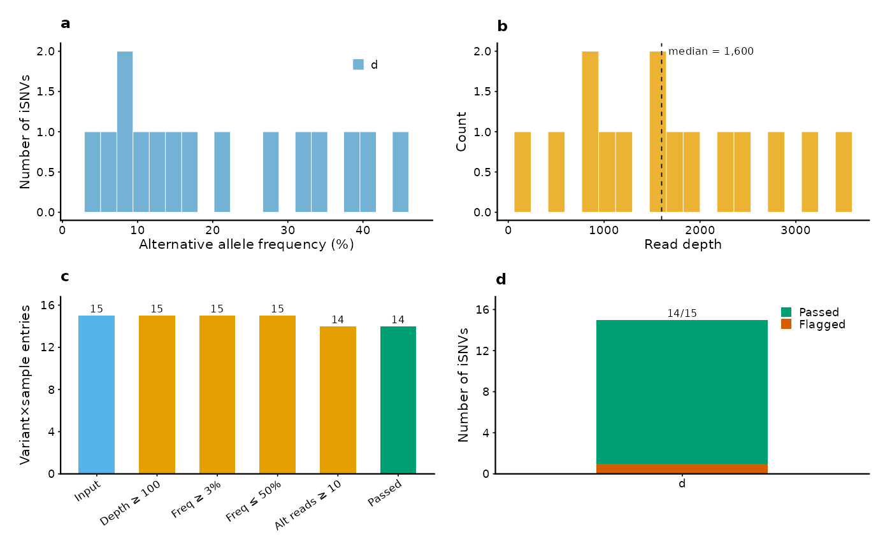

Creates a publication-quality four-panel dashboard showing
frequency distribution, read depth, QC filtering waterfall,
and per-sample pass/fail summary. Panels a and d draw and count
calls, frequencies above 0, as qcSummary does: a
recorded 0 is a site assessed without the allele.
Examples
if (requireNamespace("ggplot2", quietly = TRUE) &&
requireNamespace("patchwork", quietly = TRUE)) {
vcf <- system.file("extdata", "test_donor.vcf",
package = "WithinHostExperiment")
whe <- readWithinHost(vcf,
colData = S4Vectors::DataFrame(sample_id = "d"),
caller = "ivar")
whe <- flagISNV(whe, ISNVFilter())
plotQCDashboard(whe)
}
